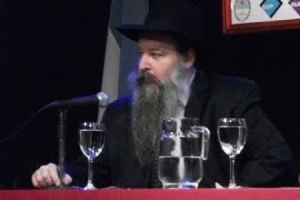

Rabbi Aharon Ha’kohen Stawsky A”H: Engineer and Driver of the Geula Train
Who was this dynamic rabbi, the ‘engineer’ of the annual Simchas Torah ‘geula train’ and beloved Chabad shliach? This man, dedicated heart and soul to the Rebbe and to his shlichus was Rabbi Aharon Peretz (HaKohen) Stawsky, of blessed memory.

Imagine walking down J E Uriburu Street in Buenos Aires on Simchas Torah night 5772. The many shops and businesses on the street are closed for the night, yet the sound of lively singing and the rhythm of dancing reverberate from an older building. You stand at the entrance, surprised to find a shul in such a commercial area and one that exudes so much vibrancy and warmth. You later find out that, although locally known as the ‘Litvishe Shul,’ it actually has been a Chabad Center with a Chassidishe minyan for many years. You step inside. The Aron Kodesh is open, the Sifrei Torah are held in loving embrace as the congregants make hakafos around the bima. The sincere happiness and love for Hashem, for His Torah, and for His people is palpable.
As the hakafa starts to taper off, a tall man with gentle eyes pounds on the bima and calls out to one and all: “Everyone is invited to join me on the ‘geula train’; even if you are not ready to march to the redemption, hop aboard, anyway!”
People seem to have been expecting this announcement as they immediately comply, taking their places in line, each man putting his hands on the next man’s shoulders, and the ‘geula train’ starts off with the tall chassid leading the way. You smile, recalling the famous story of the Chassidim, stuck in the U.S.S.R. after the war, and how they made a similar ‘train,’ pretending they were travelling to the Rebbe. Incredibly, all those who joined the imaginary train subsequently merited to leave the Soviet Union soon after.
With this in mind, you too join the ‘train’ as it dances its way out the door and down the street, Tahalucha-style, to another local shul.
Who was this dynamic rabbi, the ‘engineer’ of the annual Simchas Torah ‘geula train’ and beloved Chabad shliach? This man, dedicated heart and soul to the Rebbe and to his shlichus was Rabbi Aharon Peretz (HaKohen) Stawsky, of blessed memory.
Rabbi Stawsky was born on the twelfth of Shvat, 5722. He grew up in Montevideo, Uruguay, where his great-grandparents had helped to lay the foundations for the Jewish community when they came from Europe. Two of his great-grandfathers, Rabbi Yaakov Stawsky, and Rabbi Dovid Mitnik were among the first Rabbis in Montevideo. Aharon Stawsky went to the local Jewish school and from a young age was a seeker of truth. He was not one to just follow the crowd, but set his personal compass by what truly counts.
After high school, the young man joined his older brother in Jerusalem, to study Jewish Philosophy in Hebrew University. He would soon come to understand that the source of Jewish philosophy is Torah, and that it is not only meant to be learned, but also to be put into practice. Having been blessed with artistic talent, he studied art at the prestigious Betzalel Academy of Arts and Design in Yerushalayim and then in Florence, Italy. Perhaps he would have made a name for himself in the world of art had he continued, but Divine Providence had a different course planned for him.
Due to factors beyond his control, Aharon was forced to return to Montevideo. That first Shabbos home, his father took him to the fledgling Chabad House for davening and introduced him to the newly-arrived shliach, Rabbi Eliezer Shemtov. He started to learn Chassidus and soon became a full-fledged Chassid. As the saying goes, ‘Chassidus demands p’nimius,’ and a p’nimi he certainly was.
In 5750 (1990), he went to learn in Morristown for a few months. His teachers in Morristown remember him fondly as a dream student. Aharon took other Spanish speaking students under his wing. He was a leader among the students, yet showed the utmost respect to the hanhala and teachers. Perhaps the most precious highlight of this period was when Rabbi Stawsky came to Crown Heights for the first time for Yom tov. The shul was very crowded as usual on Simchas Torah, and standing with the Kohanim to bless the people he was practically lifted off the ground from the pushing of the crowd. Together, the Kohanim chanted the timeless tune of the blessings, which rang out as one mighty voice. It was a wondrous and heavenly experience. Then, as he passed the Rebbe, he trembled, hoping to hear the words that would validate his Kahuna. Sure enough, the Rebbe said “yasher ko’ach” paused and added “Kohen” with a beaming smile.
In 5751 (1991), Aharon Stawsky married and went back to Montevideo to join the family business. He deeply felt the distance from the Rebbe and missed the strong Chassidic environment of the yeshiva. For a while, he satisfied his yearnings by learning with the shluchim in Montevideo, Rabbi Eliezer Shemtov and Rabbi Shlomo Levy (later of Argentina). Mrs. Stawsky said: “For my husband, every moment was an opportunity to learn. He found these moments unique and precious … Even at work in his parents store, he exploited every free minute and dedicated himself to study.”
For Aharon Stawsky this was still not enough. In 5753 (1993) he toyed with the idea of going back to the U.S. to study in Kollel. “I don’t want to be an ‘am ha’aretz’ all my life,” he told his wife. His wish to learn was so strong, says Mrs. Stawsky, that in spite of all the difficult circumstances, financial obstacles, disapproval of relatives, and responsibility to a growing family, they wrote to the Rebbe about joining the kollel in Morristown.
With the Rebbe’s haskama and brachos, the Stawskys arrived in Morristown in 5754 (1994). After two and a half wonderful and productive years, Aharon was ready for the next step: smicha. The young family moved yet again, this time to Crown Heights.
In New York, Rabbi Stawsky discovered a task awaiting him. Machon Chana had a large influx of Spanish speaking students from South America and was looking for a Spanish speaking teacher. Rabbi Stawsky dedicated himself to teaching them Chassidus, spending hours upon hours translating the Rebbe’s sichos into Spanish for his students.
After five years of study in the U.S., the Stawskys were ready to dedicate themselves to full time shlichus. They wrote to the Rebbe and through the Igros Kodesh received a clear answer in the affirmative. Thus empowered, they returned to South America in 5758 (1998) as shluchim in Buenos Aries under Rabbi Grunblatt.
The couple threw themselves fully into the task. Rabbi Stawsky gave shiurim to mekuravim, eventually drawing many young people. Through innovative programs created especially for singles, he and his wife merited to have a hand in many shidduchim. In 5760, a new project came up. Rabbi Stawsky and his wife became the official shluchim of the Beis Chabad of Once, housed in the Litvishe Shul. This is located on a commercial street not far from the religious neighborhoods. Here, too, Aharon Stawsky dedicated himself totally to the Rebbe’s shlichus. He initiated many new projects to satisfy the unique needs of his community. One of these programs was Beit Seifer Technology, called by its acrostic: BeST. It provided young people with training in graphic design in a kosher environment.
A fellow shliach and mentor pointed out that Rabbi Stawsky’s two names well described his character. Like his ancestor, Aharon, the first Kohen, all that he did was through ways of peace, yet at the same time, he went ‘l’chat’chilla aribber’ bursting through boundaries, as indicated by the name Peretz.
On the fourteenth of Tishrei, Erev Sukkos, 5773, while building his Sukka with his young son, Rabbi Aharon Peretz ben Rafael HaKohen was niftar. He spent his last moments in preparation for a mitzvah, just as the fifty years of his life were spent in preparation for geula.
Shliach and a Chassid
Rabbi Stawsky’s daughter gave the following speech to her classmates about her father:
What does it mean to be a shliach and a Chassid?
It means to give your life to help another yid and show him the way of Hashem with love.
There can be times when a person can feel that there are too many obstacles. He works from morning to night, yet it seems that he is not making any progress. Nevertheless, he must be b’simcha because he is on a mission of the Rebbe, and the Rebbe will give him the power and strength he needs to fulfill his mission.
A shliach should never forget that Hashem is holding him at every moment, and he is never alone, because Hashem is our father and He only wants the best for us. Being a shliach of the Rebbe is a challenge and responsibility, but also a great privilege.
I want to share with you one of our many shlichus life-stories.
Our Beit Chabad is located in a commercial zone and our main job is to visit, try to influence, and make connections with the local Jewish business owners and employees. We try to give shiurim wherever we can—some at offices, and some at the Beit Chabad.
My father used to go to a store that is next to our Beit Chabad every day and talk with the owner, Eliezer. He shared thoughts and jokes, put on t’fillin with him, and invited him over to eat for Shabbos and Yom Tov meals. My father did it all with love and simcha, being careful not to pressure him to keep Shabbos.
Every Shabbos we used to walk 16 blocks to get to the shul. When my younger brother Chaim passed by the store, he would always wave his hand and shout out a strong and leibedik, “Shabbat Shalom!” The store owner would respond Shabbat Shalom with a shining smile. The same thing would happen again and again. Almost all the Jewish storeowners would walk out of their stores to shake Chaim’s hand and say Shabbat Shalom.
Years passed by and Eliezer started to learn Tanya once a week with my father. Soon thereafter, his wife Chana started to learn in the same class. Slowly, they learnt more and started keeping more. Eliezer started wearing a kippa, Chana started to dress modestly and wear a sheitel, and soon they were keeping Shabbos. Now they are full members of our Chabad community, and they send their daughters to the Chabad school. All of this was in merit of the passion and the love my dear father had for all Jews.
My father was a great host. All of the shiurim given at the Beit Chabad were at lunchtime. My father very much enjoyed serving the meals to each one of the students, many times cooking or preparing a cup of coffee for them, himself. We have the same attitude at home. Our home is a place of loving and unconditional Hachnasas orchim.
Over the years we had many guests stay in our home. Amongst them were daughters of shluchim who were my age. They came to Argentina from places like Paraguay or Peru, where there is no Lubavitch school. My parents also took in a girl for 2 and a half years, whose parents suffer from a psychiatric illness. If my parents hadn’t taken her in, she would have had to go to a Jewish orphanage like her brothers. The girl’s mental condition was unstable, and she was not easy to live with. Nevertheless, my parents continued helping this girl with great mesirus nefesh and joy.
All this has had a great impact on me. It taught me a wonderful lesson of ahavas Yisroel and to have true consideration for others. I would like to have the same strength and mesiras nefesh that my parents had, and to teach it to my children like they taught it to me.
My dear father zichrono livracha had a custom that every Simchas Torah in the middle of the hakafos he would call everyone to join him in the Moshiach train. He was the ‘driver’ and everyone made a big line behind him. He would then lead the “train” on Tahalucha to another shul called the Galitzianer Shul, which was only one block away from our shul. Once they were there they would invite the people to join them in their dance.
This happened every year. Even though this Simchas Torah my father wasn’t physically way with us, the people of our shul continued the tradition.
I hope that I will grow to be like my parents, and teach my children to do the same. In the z’chus of all the shluchim around the world and their mesiras nefesh, we should be zocheh to Moshiach now!
Gordon. "Rabbi Aharon Ha’kohen Stawsky A”H: Engineer and Driver of the Geula Train." Beis Moshiach, no. 895 (September 17, 2013).